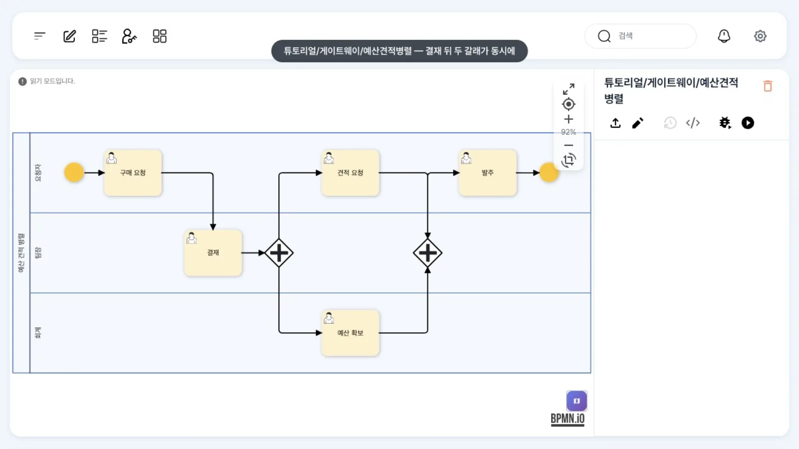
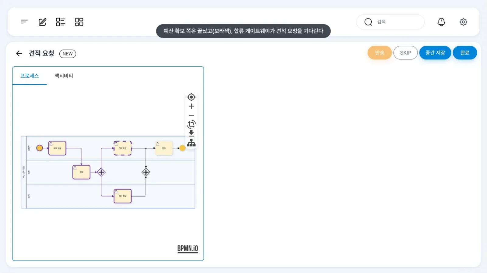
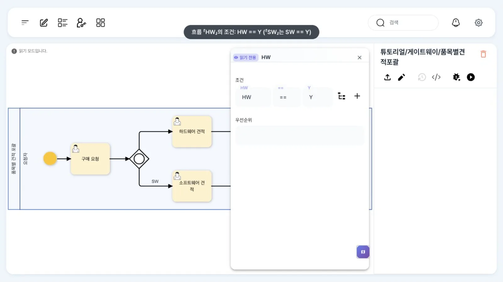
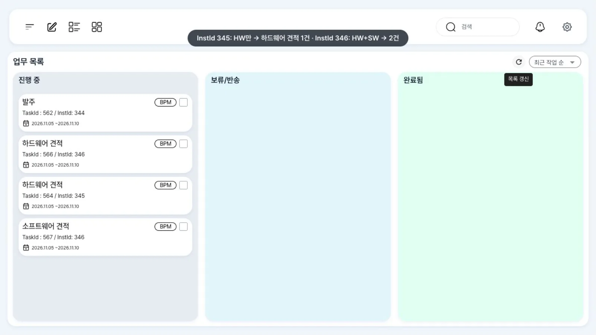
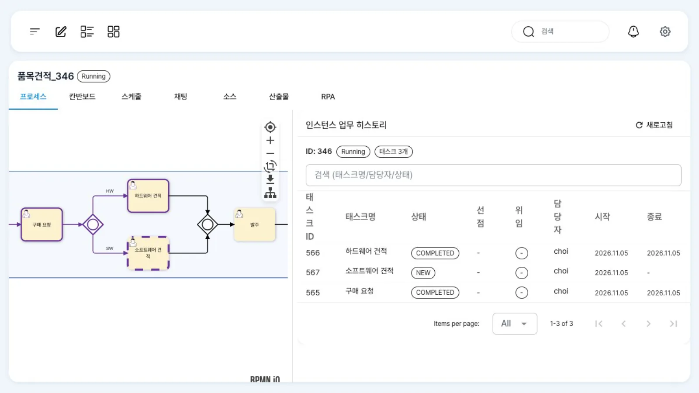

결재가 끝나면 「예산 확보」와 「견적 요청」을 동시에 시작하고 둘 다 끝나야 「발주」로 갑니다(병렬). 품목에 하드웨어·소프트웨어가 섞였는지에 따라 필요한 견적만 열고, 연 것만 기다립니다(포괄).
무엇을 · 왜#
배타 게이트웨이는 경로 하나만 고릅니다. 여러 일을 동시에 처리해야 할 때는 두 가지 게이트웨이를 씁니다.
병렬 게이트웨이 (AND, +) |
포괄 게이트웨이 (OR, ○) |
|
|---|---|---|
| 갈라질 때 | 나가는 흐름을 모두 엽니다. 조건을 보지 않습니다 | 조건이 참인 흐름만 엽니다(하나 이상) |
| 합칠 때 | 들어오는 흐름이 모두 끝나야 다음으로 | 열렸던 흐름만 끝나면 다음으로 |
| 언제 | 늘 함께 해야 하는 일(예산 확보 ∥ 견적 요청) | 경우에 따라 일부만 필요한 일(HW 견적 · SW 견적) |
| uEngine6 XML | <bpmn:parallelGateway> 두 개(분기·합류), 확장 JSON 없음 |
<bpmn:inclusiveGateway> 두 개, 나가는 흐름마다 Evaluate 조건 |
분기와 합류는 같은 종류의 게이트웨이를 짝으로 둡니다. 엔진은 합류 게이트웨이에서 그 사이 블록(BlockFinder)에 아직 진행 중인 작업이 있는지 보고, 없을 때만 다음으로 넘어갑니다.
그래서 포괄 합류는 열리지 않은 갈래를 기다리지 않습니다.
두 사람이 나눠 맡는 병렬 작업은 레인으로 담당자를 구분합니다. 이 장의 병렬 예제에서 「예산 확보」는 회계 레인(정회계), 「견적 요청」은 요청자 레인(최구매)입니다.
따라 하기#
- 병렬 정의 보기. 홍길동으로
튜토리얼/게이트웨이/예산견적병렬을 엽니다. 「구매 요청 → 결재(윤팀장) → + → 예산 확보(정회계) ∥ 견적 요청(최구매) → + → 발주」입니다. 병렬 게이트웨이의 패널에는 레인만 있습니다.
예산견적병렬 정의 - 두 사람에게 동시에. 구매 요청과 결재가 끝나면(이 장에서는 API로 미리 진행) 정회계의 업무 목록에 「예산 확보」가, 최구매의 업무 목록에 「견적 요청」이 같은 인스턴스 번호로 함께 생깁니다. 정회계가 「예산 확보」를 열어 「완료」합니다.
- 합류는 기다립니다. 최구매의 업무 목록에는 아직 「견적 요청」만 있고 「발주」가 없습니다. 「견적 요청」을 열면 작업 화면 그림에서 예산 확보 쪽은 보라색(끝남)이고 합류 게이트웨이에서 멈춰 있습니다.

합류가 견적 요청을 기다리는 화면 - 둘 다 끝나면 진행. 「견적 요청」을 「완료」하고 업무 목록으로 돌아오면 「발주」가 생깁니다.
- 포괄 정의 보기.
튜토리얼/게이트웨이/품목별견적포괄을 엽니다. 「구매 요청」에서 품목과 함께HW·SW칸에Y/N을 받습니다. 「HW」 흐름을 더블클릭하면 조건HW == Y가, 「SW」 흐름에는SW == Y가 있습니다.
포괄 게이트웨이의 조건 - 조건에 맞는 갈래만 열립니다. 두 건을 요청합니다. 하나는
HW=Y, SW=N, 다른 하나는HW=Y, SW=Y입니다. 최구매의 업무 목록에서 첫 건은 「하드웨어 견적」 하나, 둘째 건은 「하드웨어 견적」과 「소프트웨어 견적」 두 개가 생깁니다.
포괄 분기 결과 - 열린 갈래만 기다립니다. 첫 건의 「하드웨어 견적」을 완료하면 곧바로 「발주」가 생깁니다(열리지 않은 소프트웨어 쪽을 기다리지 않음). 둘째 건은 「하드웨어 견적」만 끝내면 「발주」가 없습니다. 작업을 완료하면 열리는 인스턴스 화면에서 하드웨어 견적은 완료 상태(보라색)로 보입니다. 소프트웨어 견적은 점선(진행 중)으로 남아 있어 합류가 기다립니다. 「소프트웨어 견적」까지 끝내야 「발주」가 생깁니다.

둘째 건: 소프트웨어 견적을 기다리는 합류
설정 레퍼런스#
요소와 _type#
| BPMN 요소 | XML | 확장 JSON | 패널 |
|---|---|---|---|
| 병렬 게이트웨이(분기·합류) | <bpmn:parallelGateway> |
없음 | 레인 표시만. 종류는 렌치 메뉴로 바꿈 |
| 포괄 게이트웨이(분기·합류) | <bpmn:inclusiveGateway> |
없음 | 레인 표시만 |
| 포괄 분기에서 나가는 흐름 | <bpmn:sequenceFlow> |
{"condition":{"_type":"org.uengine.kernel.Evaluate",…}} |
흐름 패널 「조건」 |
이 장에서 배포한 정의(발췌)#
<!-- 병렬: 튜토리얼/게이트웨이/예산견적병렬 -->
<bpmn:parallelGateway id="Split"><bpmn:incoming>F3</bpmn:incoming>
<bpmn:outgoing>F4</bpmn:outgoing><bpmn:outgoing>F5</bpmn:outgoing></bpmn:parallelGateway>
<bpmn:userTask id="Quote" name="견적 요청">…</bpmn:userTask> <!-- 요청자 레인 -->
<bpmn:userTask id="Budget" name="예산 확보">…</bpmn:userTask> <!-- 회계 레인(정회계) -->
<bpmn:parallelGateway id="Join"><bpmn:incoming>F6</bpmn:incoming><bpmn:incoming>F7</bpmn:incoming>
<bpmn:outgoing>F8</bpmn:outgoing></bpmn:parallelGateway>
<!-- 포괄: 튜토리얼/게이트웨이/품목별견적포괄 -->
<bpmn:inclusiveGateway id="Split">…</bpmn:inclusiveGateway>
<bpmn:sequenceFlow id="F3" name="HW" sourceRef="Split" targetRef="HwQuote">
<bpmn:extensionElements><uengine:properties><uengine:json>
{"condition":{"_type":"org.uengine.kernel.Evaluate","key":"HW","condition":"==","value":"Y"}}
</uengine:json></uengine:properties></bpmn:extensionElements>
</bpmn:sequenceFlow>
<bpmn:sequenceFlow id="F4" name="SW" sourceRef="Split" targetRef="SwQuote"> … "key":"SW" … </bpmn:sequenceFlow>
<bpmn:inclusiveGateway id="Join">…</bpmn:inclusiveGateway>
실행 결과(이 장을 촬영할 때 API로 확인한 열린 작업)#
| 정의 · 입력 | 분기 직후 | 한쪽만 끝냈을 때 | 모두 끝냈을 때 |
|---|---|---|---|
| 병렬 | 예산 확보 · 견적 요청 | 남은 하나만(발주 없음) | 발주 |
포괄 HW=Y, SW=N |
하드웨어 견적 | — | 발주(곧바로) |
포괄 HW=Y, SW=Y |
하드웨어 견적 · 소프트웨어 견적 | 남은 하나만(발주 없음) | 발주 |
포괄 HW=N, SW=Y |
소프트웨어 견적 | — | 발주(곧바로) |
포괄 HW=N, SW=N |
(없음) — 인스턴스가 바로 Completed |
— | — |
흔한 실수#
| 증상 | 원인 | 고치는 법 |
|---|---|---|
| 한 갈래만 끝났는데 다음으로 감 | 분기는 병렬인데 합류를 배타 게이트웨이로 둠(배타 합류는 먼저 끝난 갈래로 진행 — 코드 기준) | 분기와 같은 종류의 게이트웨이로 합류합니다 |
| 발주 없이 인스턴스가 끝남 | 포괄 분기의 조건이 모두 거짓이고 기본 흐름도 없음(HW=N, SW=N으로 확인) |
기본 흐름을 두거나 입력 단계에서 막습니다 |
| 두 사람 일이 한 사람에게 감 | 갈래의 작업이 같은 레인 | 레인을 나눠 담당자를 정합니다(레인과 담당자) |
| 조건이 늘 거짓 | 조건 변수가 정의에 선언되지 않았거나 작업 입력이 변수로 매핑되지 않음 | 프로세스 변수 선언 + 데이터 매핑 |
확인 문제#
병렬 예제에서 정회계가 「예산 확보」를 끝내지 않으면 최구매가 「견적 요청」을 끝내도 발주로 가나요?
가지 않습니다. 병렬 합류는 들어오는 갈래가 모두 끝나야 다음으로 갑니다. 「발주」는 「예산 확보」까지 끝난 뒤에 생깁니다.
포괄 예제에서 `HW=Y, SW=N`이면 합류는 소프트웨어 견적을 기다리나요?
기다리지 않습니다. 소프트웨어 갈래는 열리지 않았으므로, 하드웨어 견적이 끝나면 곧바로 발주로 갑니다.
`HW=N, SW=N`이면 어떻게 되나요? 어떻게 막나요?
열리는 갈래가 없어 「발주」 없이 인스턴스가 그대로 끝납니다(API로 실행해 확인: 열린 작업 없음, 상태 Completed). 「구매 요청」에서 둘 중 하나는 반드시 고르게 하거나, 포괄 분기에 기본 흐름(예: 「품목 확인」 작업)을 두어 그쪽으로 보내세요.